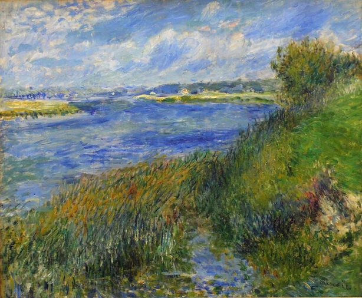

Pierre-Auguste Renoir,1841 - 1919,Impressionism,French,"Pierre-Auguste Renoir, commonly known as Auguste Renoir (; French: [pjɛʁ oɡyst ʁənwaʁ]; 25 February 1841 – 3 December 1919), was a French artist who was a leading painter in the development of the Impressionist style. As a celebrator of beauty and especially feminine sensuality, it has been said that ""Renoir is the final representative of a tradition which runs directly from Rubens to Watteau.""",http://en.wikipedia.org/wiki/Pierre-Auguste_Renoir,336
